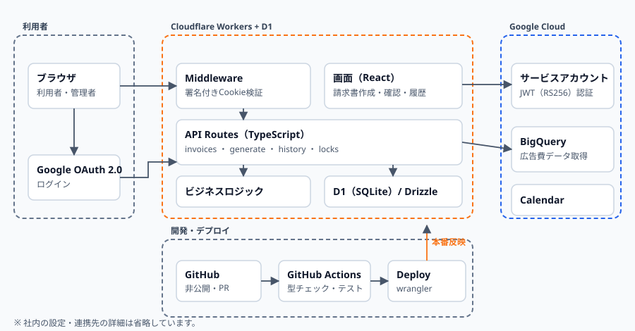

請求書作成ツール
広告費データ（BigQuery）と請求ルールから請求書を自動作成し、会計サービスへ登録するWebアプリです。インターン先で開発を担当しました。

詳細 →Portfolio
名古屋大学 情報学部 自然情報学科1年。ソフトウェア開発、数理最適化、AI・機械学習に関心があり、実際の課題を技術で解決するプロジェクトに取り組んでいます。
制作物を見る経済産業省のAKATSUKIプロジェクト「Q-Quest GROW」に採択され、IoTセンサーの最適配置をテーマに、QUBO・量子アニーリング・古典ヒューリスティックを組み合わせた最適化手法の検討・開発を進めています。量子技術を使うこと自体を目的とせず、従来手法との比較や実際の配置問題への適用まで取り組みたいと考えています。
Webマーケティング企業で長期インターンをしており、SEO、LLMO、データ分析、業務改善、社内DXツール開発に携わっています。請求書生成業務の自動化、監査ログや権限制御を含む業務システムの開発、データをもとにした集客施策の改善などを経験してきました。
競技プログラミングでは AtCoder で水色レートです。最近はヒューリスティック最適化にも関心を持っています。TEDxNagoyaU では Web・システム開発に関わり、イベント運営を支える技術基盤の開発にも取り組んでいます。
広告費データ（BigQuery）と請求ルールから請求書を自動作成し、会計サービスへ登録するWebアプリです。インターン先で開発を担当しました。

詳細 →QUBO・量子アニーリング・古典ヒューリスティックを組み合わせ、従来手法と比較しながら配置問題の最適化手法を検討・開発しています。
Web・システム開発に関わり、イベント運営を支える技術基盤の開発に取り組んでいます。
技術、研究、プロダクト開発、未踏、競技プログラミング、AI・最適化などに取り組んでいる方と、大学や地域を超えて交流できれば嬉しいです。インターン先も募集しています。お気軽にご連絡ください。